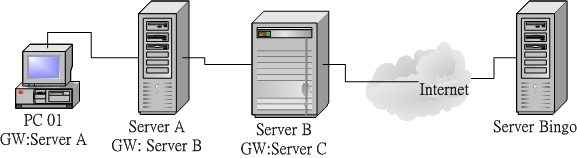

2.3 TCP/IP 的网络层相关封包与数据
我们现在知道要有网络的话，必须要有网络相关的硬件，而目前最常见的网络硬件接口为以太网络，包括网络线、网络卡、Hub/Switch 等等。而以太网络上面的传输使用网络卡卡号为基准的 MAC 讯框，配合 CSMA/CD 的标准来传送讯框，这就是硬件部分。在软件部分，我们知道 Internet 其实就是 TCP/IP 这个通讯协议的通称，Internet 是由 InterNIC(注12) 所统一管理的， 但其实他仅是负责分配 Internet 上面的 IP 以及提供相关的 TCP/IP 技术文件而已。不过 Internet 最重要的就是 IP 啊！所以， 这个小节就让我们来讲讲网络层的 IP 与路由吧！
2.3.1 IP 封包的封装
目前因特网社会的 IP 有两种版本，一种是目前使用最广泛的 IPv4 (Internet Protocol version 4, 因特网协定第四版)， 一种则是预期未来会热门的 IPv6 。IPv4 记录的地址由于仅有 32 位，预计在 2020 年前后就会分发完毕，如此一来， 新兴国家或者是新的网络公司，将没有网络可以使用。为了避免这个问题发生，因此就有 IPv6 的产生。 IPv6 的地址可以达到 128 位，可以多出 2 的 96 次方倍的网址数量，这样的 IP 数量几乎用不完啦！虽然 IPv6 具有前瞻性，但目前主流媒体大多还是使用 IPv4 ，因此本文主要谈到的 IP 都指 IPv4 而言喔！(注13)
我们在前一小节谈到 MAC 的封装，那么 IP 封包的封装也得要来了解一下，才能知道 IP 到底是如何产生的啊！ IP 封包可以达到 65535 bytes 这么大，在比 MAC 大的情况下，我们的操作系统会对 IP 进行拆解的动作。至于 IP 封装的表头数据绘制如下：(下图第一行为每个字段的 bit 数)
| 4 bits | 4 bits | 8 bits | 3 bits | 13 bits |
|---|---|---|---|---|
| Version | IHL | Type of Service | Total Length | |
| Identification | Flags | Fragmentation Offset | ||
| Time To Live | Protocol | Header Checksum | ||
| Source Address | ||||
| Destination Address | ||||
| Options | Padding | |||
| Data |
图 2.3-1、IP 封包的表头资料
在上面的图示中有个地方要注意，那就是『每一行所占用的位数为 32 bits』， 各个表头的内容分别介绍如下：
Version(版本) 宣告这个 IP 封包的版本，例如目前惯用的还是 IPv4 这个版本就在这里宣告。
IHL(Internet Header Length, IP表头的长度) 告知这个 IP 封包的表头长度，使用的单位应该是字组 (word) ，一个字组为 4bytes 大小喔。
Type of Service(服务类型) 这个项目的内容为『PPPDTRUU』，表示这个 IP 封包的服务类型，主要分为： PPP：表示此 IP 封包的优先度，目前很少使用； D：若为 0 表示一般延迟(delay)，若为 1 表示为低延迟； T：若为 0 表示为一般传输量 (throughput)，若为 1 表示为高传输量； R：若为 0 表示为一般可靠度(reliability)，若为 1 表示高可靠度。 UU：保留尚未被使用。 举例来说，gigabit 以太网络的种种相关规格可以让这个 IP 封包加速且降低延迟，某些特殊的标志就是在这里说明的。
Total Length(总长度) 指这个 IP 封包的总容量，包括表头与内容 (Data) 部分。最大可达 65535 bytes。
Identification(辨别码) 我们前面提到 IP 袋子必须要放在 MAC 袋子当中。不过，如果 IP 袋子太大的话，就得先要将 IP 再重组成较小的袋子然后再放到 MAC 当中。而当 IP 被重组时，每个来自同一个 IP 的小袋子就得要有个标识符以告知接收端这些小袋子其实是来自同一个 IP 封包才行。 也就是说，假如 IP 封包其实是 65536 那么大 (前一个 Total Length 有规定)， 那么这个 IP 就得要再被分成更小的 IP 分段后才能塞进 MAC 讯框中。那么每个小 IP 分段是否来自同一个 IP 资料，呵呵！那就是这个标识符的功用啦！
Flags(特殊旗标) 这个地方的内容为『0DM』，其意义为： D：若为 0 表示可以分段，若为 1 表示不可分段 M：若为 0 表示此 IP 为最后分段，若为 1 表示非最后分段。
Fragment Offset(分段偏移) 表示目前这个 IP 分段在原始的 IP 封包中所占的位置。就有点像是序号啦，有这个序号才能将所有的小 IP 分段组合成为原本的 IP 封包大小嘛！透过 Total Length, Identification, Flags 以及这个 Fragment Offset 就能够将小 IP 分段在收受端组合起来啰！
Time To Live(TTL, 存活时间) 表示这个 IP 封包的存活时间，范围为 0-255。当这个 IP 封包通过一个路由器时， TTL 就会减一，当 TTL 为 0 时，这个封包将会被直接丢弃。说实在的，要让 IP 封包通过 255 个路由器，还挺难的～ ^_^
Protocol Number(协定代码) 来自传输层与网络层本身的其他数据都是放置在 IP 封包当中的，我们可以在 IP 表头记载这个 IP 封包内的资料是啥， 在这个字段就是记载每种数据封包的内容啦！在这个字段记载的代码与相关的封包协议名称如下所示：
| IP 内的号码 | 封包协议名称(全名) | | --- | --- | | 1 | ICMP (Internet Control Message Protocol) | | 2 | IGMP (Internet Group Management Protocol) | | 3 | GGP (Gateway-to-Gateway Protocol) | | 4 | IP (IP in IP encapsulation) | | 6 | TCP (Transmission Control Protocol) | | 8 | EGP (Exterior Gateway Protocol) | | 17 | UDP (User Datagram Protocol) |当然啦，我们比较常见到的还是那个 TCP, UDP, ICMP 说！
Header Checksum(表头检查码) 用来检查这个 IP 表头的错误检验之用。
Source Address 还用讲吗？当然是来源的 IP 地址，从这里我们也知道 IP 是 32 位喔！
Destination Address 有来源还需要有目标才能传送，这里就是目标的 IP 地址。
Options (其他参数) 这个是额外的功能，提供包括安全处理机制、路由纪录、时间戳、严格与宽松之来源路由等。
Padding(补齐项目) 由于 Options 的内容不一定有多大，但是我们知道 IP 每个数据都必须要是 32 bits，所以，若 Options 的数据不足 32 bits 时，则由 padding 主动补齐。
你只要知道 IP 表头里面含有： TTL, Protocol, 来源地址与目标地址也就够了！而这个 IP 表头的来源与目标 IP ，以及那个判断通过多少路由器的 TTL ，就能了解到这个 IP 将被如何传送到目的端吶。后续各小节我们将介绍 IP 的组成与范围，还有 IP 封包如何传送的机制 (路由) 等等。
2.3.2 IP 地址的组成与分级
现在我们知道 IP (Internet Protocol) 其实是一种网络封包，而这个封包的表头最重要的就是那个 32 位的来源与目标地址！ 为了方便记忆，所以我们也称这个 32 bits 的数值为 IP 网络地址就是了。因为网络是人类发明的，所以很多概念与邮务系统类似！ 那这个 IP 其实就类似所谓的『门牌号码』啦！那么这个 IP 有哪些重要的地方需要了解的呢？底下我们就来谈一谈吧！
既然 IP 的组成是 32 bits 的数值，也就是由 32 个 0 与 1 组成的一连串数字！那么当我们思考所有跟 IP 有关的参数时，你就应该要将该参数想成是 32 位的数据喔！ 不过，因为人类对于二进制实在是不怎么熟悉，所以为了顺应人们对于十进制的依赖性，因此，就将 32 bits 的 IP 分成四小段，每段含有 8 个 bits ，将 8 个 bits 计算成为十进制，并且每一段中间以小数点隔开，那就成了目前大家所熟悉的 IP 的书写模样了。如下所示：
IP 的表示式：
00000000.00000000.00000000.00000000 ==> 0.0.0.0
11111111.11111111.11111111.11111111 ==> 255.255.255.255
所以 IP 最小可以由 0.0.0.0 一直到 255.255.255.255 哩！但在这一串数字中，其实还可以分为两个部分喔！ 主要分为 Net_ID (网域号码)与 Host_ID (主机号码) 两部份。我们先以 192.168.0.0 ~ 192.168.0.255 这个 Class C 的网域当作例子来说明好了：
192.168.0.0~192.168.0.255 这个 Class C 的说明：
11000000.10101000.00000000.00000000
11000000.10101000.00000000.11111111
|----------Net_ID---------|-host--|
在上面的范例当中，前面三组数字 (192.168.0) 就是网域号码，最后面一组数字则称为主机号码。 至于同一个网域的定义是『在同一个物理网段内，主机的 IP 具有相同的 Net_ID ，并且具有独特的 Host_ID』，那么这些 IP 群就是同一个网域内的 IP 网段啦！
Tips: 什么是物理网段呢？当所有的主机都是使用同一个网络媒体串在一起， 这个时候这些主机在实体装置上面其实是联机在一起的，那么就可以称为这些主机在同一个物理网段内了！ 同时并请注意，同一个物理网段之内，可以依据不同的 IP 的设定，而设定成多个『IP 网段』喔！

上面例子当中的 192.168.0.0, 192.168.0.1, 192.168.0.2, ...., 192.168.0.255 (共 256 个) 这些 IP 就是同一个网域内的 IP 群(同一个网域也称为同一个网段！)，请注意，同一个 Net_ID 内，不能具有相同的 Host_ID ，否则就会发生 IP 冲突，可能会造成两部主机都没有办法使用网络的问题！
- IP 在同一网域的意义
那么同一个网域该怎么设定，与将 IP 设定在同一个网域之内有什么好处呢？
Net_ID 与 Host_ID 的限制： 在同一个网段内，Net_ID 是不变的，而 Host_ID 则是不可重复，此外，Host_ID 在二进制的表示法当中，不可同时为 0 也不可同时为 1 ，因为全为 0 表示整个网段的地址 (Network IP)，而全为 1 则表示为广播的地址 (Broadcast IP)。例如上面的例子当中，192.168.0.0 (Host_ID 全部为 0)以及 192.168.0.255 (Host_ID 全部为 1) 不可用来作为网段内主机的 IP 设定，也就是说，这个网段内可用来设定主机的 IP 是由 192.168.0.1 到 192.168.0.254；
在区网内透过 IP 广播传递数据 在同物理网段的主机如果设定相同的网域 IP 范围 (不可重复)，则这些主机都可以透过 CSMA/CD 的功能直接在区网内用广播进行网络的联机，亦即可以直接网卡对网卡传递数据 (透过 MAC 讯框)；
设定不同区网在同物理网段的情况 在同一个物理网段之内，如果两部主机设定成不同的 IP 网段，则由于广播地址的不同，导致无法透过广播的方式来进行联机。 此时得要透过路由器 (router) 来进行沟通才能将两个网域连结在一起。
网域的大小 当 Host_ID 所占用的位越大，亦即 Host_ID 数量越多时，表示同一个网域内可用以设定主机的 IP 数量越多。
所以说，贵单位公司内的计算机群，或者是你宿舍或家里面的所有计算机，当然都设定在同一个网域内是最方便的， 因为如此一来每一部计算机都可以直接透过 MAC 来进行数据的交流，而不必经由 Router (路由器) 来进行封包的转递呢！(Router 这部份在第八章才会提及)。
- IP 与门牌号码的联想
刚接触到 IP 组成的朋友都很困扰，又分啥网域号码与主机号码，烦死了！其实，你不用烦恼啊！使用门牌号码的概念来想即可。 既然 IP 是门牌，那拿我们昆山科技大学的门牌来说好了，我们的门牌是：『台南市永康区大湾路 949 号』， 假设整个大湾路是同一个巷弄，那么我们这个门牌的网域号码『台南市永康区大湾路』而我的主机号码就是『 949 号』， 那么整条大湾路上面只要是开头为『台南市永康区大湾路』的，就是跟我们同一个网域啰！当然啦，门牌号码不可能有第二个 949 号啊！这样理解否？
另外，Host_ID 全为 0 与全为 1 (二进制的概念) 时，代表整条巷子的第一个与最后一个门牌，而第一个门牌我们让他代表整条巷子， 所以又称为 Network IP，就是巷子口那个 XXX 巷的立牌啦！至于最后一个 IP ，则代表巷子尾，亦即本条巷子的最后一个门牌， 那就是我们在巷子内广播时的最后一个 IP ，又称为 Broadcast IP 的啰。
在我们这个巷子内，我们可以透过大声公用广播的方式跟大家沟通讯息，例如前几年很热门的张君雅小妹妹的泡面广告， 在巷子内透过广播告诉张君雅小妹妹，你阿嬷将泡面煮好了，赶快回家吃面去！那如果不是张君雅小妹妹呢？就将该讯息略过啊！ 这样有没有联想到 CSMA/CD 的概念呢？
那如果你的数据不是要给本巷子内的门牌呢？此时你就得要将资料拿给巷子内的邮局 (路由器)，由邮局帮你传送， 你只要知道巷子内的那间邮局在哪里即可，其他的就让邮局自己帮你把信件传出去即可啊！这就是整个区网与门牌对应的想法！ 这样有没有比较清晰啊？
- IP 的分级
你应该要想到一个问题，那就是我的总门牌『台南市永康区大湾路 949 号』中，到哪里是巷子而到哪里是门牌？ 如果到『台南市』是巷子，那么我的门牌将有好多乡镇的组成，如果巷子号码到『台南市永康区』时， 那么我们的门牌就又少了点。所以说，这个『巷子』的大小，将会影响到我们主机号码的数量！
为了解决这个问题，以及为了 IP 管理与发放注册的方便性，InterNIC 将整个 IP 网段分为五种等级， 每种等级的范围主要与 IP 那 32 bits 数值的前面几个位有关，基本定义如下：
以二进制说明 Network 第一个数字的定义：
Class A : 0xxxxxxx.xxxxxxxx.xxxxxxxx.xxxxxxxx ==> NetI_D 的开头是 0
|--net--|---------host------------|
Class B : 10xxxxxx.xxxxxxxx.xxxxxxxx.xxxxxxxx ==> NetI_D 的开头是 10
|------net-------|------host------|
Class C : 110xxxxx.xxxxxxxx.xxxxxxxx.xxxxxxxx ==> NetI_D 的开头是 110
|-----------net-----------|-host--|
Class D : 1110xxxx.xxxxxxxx.xxxxxxxx.xxxxxxxx ==> NetI_D 的开头是 1110
Class E : 1111xxxx.xxxxxxxx.xxxxxxxx.xxxxxxxx ==> NetI_D 的开头是 1111
五种分级在十进制的表示：
Class A : 0.xx.xx.xx ~ 127.xx.xx.xx
Class B : 128.xx.xx.xx ~ 191.xx.xx.xx
Class C : 192.xx.xx.xx ~ 223.xx.xx.xx
Class D : 224.xx.xx.xx ~ 239.xx.xx.xx
Class E : 240.xx.xx.xx ~ 255.xx.xx.xx
根据上表的说明，我们可以知道，你只要知道 IP 的第一个十进制数，就能够约略了解到该 IP 属于哪一个等级， 以及同网域 IP 数量有多少。这也是为啥我们上头选了 192.168.0.0 这一 IP 网段来说明时，会将巷子定义到第三个数字之故。 不过，上表中你只要记忆三种等级，亦即是 Class A, B, C 即可，因为 Class D 是用来作为群播 (multicast) 的特殊功能之用 (最常用在大批计算机的网络还原)，至于 Class E 则是保留没有使用的网段。因此，能够用来设定在一般系统上面的，就只有 Class A, B, C 三种等级的 IP 啰！
2.3.3 IP 的种类与取得方式
接下来要跟大家谈一谈也是很容易造成大家困扰的一个部分，那就是 IP 的种类！很多朋友常常听到什么『真实IP, 实体 IP, 虚拟 IP, 假的 IP....』烦都烦死了～其实不要太紧张啦！实际上，在 IPv4 里面就只有两种 IP 的类别，分别是：
Public IP : 公共 IP ，经由 INTERNIC 所统一规划的 IP，有这种 IP 才可以连上 Internet ；
Private IP : 私有 IP 或保留 IP，不能直接连上 Internet 的 IP ， 主要用于局域网络内的主机联机规划。
早在 IPv4 规划的时候就担心 IP 会有不足的情况，而且为了应付某些企业内部的网络设定，于是就有了私有 IP (Private IP) 的产生了。私有 IP 也分别在 A, B, C 三个 Class 当中各保留一段作为私有 IP 网段，那就是：
- Class A：10.0.0.0 - 10.255.255.255
- Class B：172.16.0.0 - 172.31.255.255
- Class C：192.168.0.0 - 192.168.255.255
由于这三段 Class 的 IP 是预留使用的，所以并不能直接作为 Internet 上面的连接之用，不然的话，到处就都有相同的 IP 啰！那怎么行！网络岂不混乱？所以啰，这三个 IP 网段就只做为内部私有网域的 IP 沟通之用。简单的说，他有底下的几个限制：
- 私有 IP 的路由信息不能对外散播 (只能存在内部网络)；
- 使用私有 IP 作为来源或目的地址的封包，不能透过 Internet 来转送 (不然网络会混乱)；
- 关于私有 IP 的参考纪录(如 DNS)，只能限于内部网络使用 (一样的原理啦)
这个私有 IP 有什么好处呢？由于他的私有路由不能对外直接提供信息，所以，你的内部网络将不会直接被 Internet 上面的 Cracker 所攻击！但是，你也就无法以私有 IP 来『直接上网』啰！因此相当适合一些尚未具有 Public IP 的企业内部用来规划其网络之设定！否则当你随便指定一些可能是 Public IP 的网段来规划你企业内部的网络设定时，万一哪一天真的连上 Internet 了，那么岂不是可能会造成跟 Internet 上面的 Public IP 相同了吗？
此外，在没有可用的公开网络情况下，如果你想要跟同学玩联机游戏怎办？也就是说，在区网内自己玩自己的联机游戏， 此时你只要规范好所有同学在同一段私有 IP 网段中，就能够顺利的玩你的网络啦！就这么简单呢！
那么万一你又要将这些私有 IP 送上 Internet 呢？这个简单，设定一个简单的防火墙加上 NAT (Network Address Transfer) 服务，你就可以透过 IP 伪装 (不要急，这个在后面也会提到) 来使你的私有 IP 的计算机也可以连上 Internet 啰！
- 特殊的 loopback IP 网段
好了，那么除了这个预留的 IP 网段的问题之外，还有没有什么其他的怪东西呢？当然是有啦！不然鸟哥干嘛花时间来唬 XX 呢？没错，还有一个奇怪的 Class A 的网域，那就是 lo 这个奇怪的网域啦 (注意：是小写的 o 而不是零喔)！这个 lo 的网络是当初被用来作为测试操作系统内部循环所用的一个网域，同时也能够提供给系统内部原本就需要使用网络接口的服务 (daemon) 所使用。
简单的说，如果你没有安装网络卡在的机器上面， 但是你又希望可以测试一下在你的机器上面设定的服务器环境到底可不可以顺利运作，这个时候怎么办， 嘿嘿！就是利用这个所谓的内部循环网络啦！这个网段在 127.0.0.0/8 这个 Class A，而且默认的主机 (localhost) 的 IP 是 127.0.0.1 呦！所以啰，当你启动了你的 WWW 服务器，然后在你的主机的 X-Window 上面执行 http://localhost 就可以直接看到你的主页啰！而且不需要安装网络卡呢！测试很方便吧！
此外，你的内部使用的 mail 怎么运送邮件呢？例如你的主机系统如何 mail 给 root 这个人呢？嘿嘿！也就是使用这一个内部循环啦！当要测试你的 TCP/IP 封包与状态是否正常时，可以使用这个呦！(所以哪一天有人问你嘿！你的主机上面没有网络卡， 那么你可以测试你的 WWW 服务器设定是否正确吗？这个时候可得回答：当然可以啰！使用 127.0.0.1 这个 Address 呀！ ^_^ )
- IP 的取得方式
谈完了 IP 的种类与等级还有相关的子域概念后，接下来我们得来了解一下，那么主机的 IP 是如何设定的呢？ 基本上，主机的 IP 与相关网域的设定方式主要有：
直接手动设定(static)： 你可以直接向你的网管询问可用的 IP 相关参数，然后直接编辑配置文件 (或使用某些软件功能) 来设定你的网络。 常见于校园网络的环境中，以及向 ISP 申请固定 IP 的联机环境；
透过拨接取得： 向你的 ISP 申请注册，取得账号密码后，直接拨接到 ISP ，你的 ISP 会透过他们自己的设定，让你的操作系统取得正确的网络参数。 此时你并不需要手动去编辑与设定相关的网络参数啦。目前台湾的 ADSL 拨接、光纤到大楼、光纤到府等，大部分都是使用拨接的方式。 为因应用户的需求，某些 ISP 也提供很多不同的 IP 分配机制。包括 hinet, seednet 等等都有提供 ADSL 拨接后取得固定 IP 的方式喔！ 详情请向你的 ISP 洽询。
自动取得网络参数 (DHCP)： 在局域网络内会有一部主机负责管理所有计算机的网络参数，你的网络启动时就会主动向该服务器要求 IP 参数， 若取得网络相关参数后，你的主机就能够自行设定好所有服务器给你的网络参数了。最常使用于企业内部、IP 分享器后端、 校园网络与宿舍环境，及缆线宽带等联机方式。
不管是使用上面哪种方式取得的 IP ，你的 IP 都只有所谓的『 Public 与 Private IP 』而已！而其他什么浮动式、固定制、 动态式等等有的没有的，就只是告诉你这个 IP 取得的方式而已。举例来说，台湾地区 ADSL 拨接后取得的 IP 通常是 public IP， 但是鸟哥曾接到香港网友的来信，他们 ADSL 拨接后，取得的 IP 是 Private ，所以导致无法架设网站喔！
2.3.4 Netmask, 子网与 CIDR (Classless Interdomain Routing)
我们前面谈到 IP 是有等级的，而设定在一般计算机系统上面的则是 Class A, B, C。现在我们来想一想，如果我们设定一个区网， 使用的是 Class A ，那么我们很容易就会想到，哪有这么多计算机可以设定在同一个 Class A 的区段内 (256x256x256-2=16777214) ？ 而且，假设真有这么多计算机好了，回想一下 CSMA/CD 吧，你的网络恐怕会一直非常停顿，因为妳得要接到一千多万台计算机对你的广播... 光是想到一千多万台的广播，你的网络还能使用吗？真没效率！
此外，分为 Class 的 IP 等级，是为了管理方面的考虑，事实上，我们不可能将一个 Class A 仅划定为一个区网。举例来说， 我们昆山取得的 Public IP 是 120.xxx 开头的，但是其实我们只有 120.114.xxx.xxx 而已，并没有取得整个 Class A 喔！ 因为我们学校也用不了这么多嘛！这个时候，我们就得要理解一下啰，就是，怎么将 Class A 的网段变小？换句话说， 我们如何将网域切的更细呢？这样不就可以分出更多段的区网给大家设定了？
前面我们提到 IP 这个 32 位的数值中分为网域号码与主机号码，其中 Class C 的网域号码占了 24 位，而其实我们还可以将这样的网域切的更细，就是让第一个 Host_ID 被拿来作为 Net_ID ，所以，整个 Net_ID 就有 25 bits ，至于 Host_ID 则减少为 7 bits 。在这样的情况下，原来的一个 Class C 的网域就可以被切分为两个子域，而每个子域就有『 256/2 - 2 = 126 』个可用的 IP 了！这样一来，就能够将原本的一个网域切为两个较细小的网域，方便分门别类的设计喔。
- Netmask, 或称为 Subnet mask (子网掩码)
那到底是什么参数来达成子网的切分呢？那就是 Netmask (子网掩码) 的用途啦！这个 Netmask 是用来定义出网域的最重要的一个参数了！不过他也最难理解了～@_@。为了帮助大家比较容易记忆住 Netmask 的设定依据，底下我们介绍一个比较容易记忆的方法。同样以 192.168.0.0 ~ 192.168.0.255 这个网域为范例好了，如下所示，这个 IP 网段可以分为 Net_ID 与 Host_ID，既然 Net_ID 是不可变的，那就假设他所占据的 bits 已经被用光了 (全部为 1)，而 Host_ID 是可变的，就将他想成是保留着 (全部为 0)，所以， Netmask 的表示就成为：
192.168.0.0~192.168.0.255 这个 C Class 的 Netmask 说明
第一个 IP： 11000000.10101000.00000000.00000000
最后一个 ： 11000000.10101000.00000000.11111111 |----------Net_ID---------|-host--|
Netmask ： 11111111.11111111.11111111.00000000 <== Netmask 二进制
： 255 . 255 . 255 . 0 <== Netmask 十进制
特别注意喔，netmask 也是 32 位，在数值上，位于 Net_ID 的为 1 而 Host_ID 为 0
将他转成十进制的话，就成为『255.255.255.0』啦！ 这样记忆简单多了吧！照这样的记忆方法，那么 A, B, C Class 的 Netmask 表示就成为这样：
Class A, B, C 三个等级的 Netmask 表示方式：
Class A : 11111111.00000000.00000000.00000000 ==> 255\. 0\. 0\. 0
Class B : 11111111.11111111.00000000.00000000 ==> 255.255\. 0\. 0
Class C : 11111111.11111111.11111111.00000000 ==> 255.255.255\. 0
所以说， 192.168.0.0 ~ 192.168.0.255 这个 Class C 的网域中，他的 Netmask 就是 255.255.255.0 ！再来，我们刚刚提到了当 Host_ID 全部为 0 以及全部为 1 的时后该 IP 是不可以使用的，因为 Host_ID 全部为 0 的时后，表示 IP 是该网段的 Network ，至于全部为 1 的时后就表示该网段最后一个 IP ，也称为 Broadcast ，所以说，在 192.168.0.0 ~ 192.168.0.255 这个 IP 网段里面的相关网络参数就有：
Netmask: 255.255.255.0 <==网域定义中，最重要的参数
Network: 192.168.0.0 <==第一个 IP
Broadcast: 192.168.0.255 <==最后一个 IP
可用以设定成为主机的 IP 数：
192.168.0.1 ~ 192.168.0.254
- 子网切分
好了，刚刚提到 Class C 还可以继续进行子域 (Subnet) 的切分啊，以 192.168.0.0 ~192.168.0.255 这个情况为例，他要如何再细分为两个子域呢？我们已经知道 Host_ID 可以拿来当作 Net_ID，那么 Net_ID 使用了 25 bits 时，就会如下所示：
原本的 C Class 的 Net_ID 与 Host_ID 的分别
11000000.10101000.00000000.00000000 Network: 192.168.0.0
11000000.10101000.00000000.11111111 Broadcast: 192.168.0.255
|----------Net_ID---------|-host--|
切成两个子网之后的 Net_ID 与 Host_ID 为何？
11000000.10101000.00000000.0 0000000 多了一个 Net_ID 了, 为 0 (第一个子网)
11000000.10101000.00000000.1 0000000 多了一个 Net_ID 了, 为 1 (第二个子网)
|----------Net_ID-----------|-host--|
第一个子网
Network: 11000000.10101000.00000000.0 0000000 192.168.0.0
Broadcast: 11000000.10101000.00000000.0 1111111 192.168.0.127
|----------Net_ID-----------|-host-|
Netmask: 11111111.11111111.11111111.1 0000000 255.255.255.128
第二个子网
Network: 11000000.10101000.00000000.1 0000000 192.168.0.128
Broadcast: 11000000.10101000.00000000.1 1111111 192.168.0.255
|----------Net_ID-----------|-host-|
Netmask: 11111111.11111111.11111111.1 0000000 255.255.255.128
所以说，当再细分下去时，就会得到两个子域，而两个子域还可以再细分下去喔 (NetID 用掉 26 bits ....)。呵呵！如果你真的能够理解 IP, Network, Broadcast, Netmask 的话，恭喜你，未来的服务器学习之路已经顺畅了一半啦！ ^^
例题：试着计算出 172.16.0.0，但 Net_ID 占用 23 个位时，这个网域的 Netmask, Network, Broadcast 等参数答：由于 172.16.xxx.xxx 是在 Class B 的等级当中，亦即 Net_ID 是 16 位才对。不过题目给的 Net_ID 占用了 23 个位喔！ 等于是向 Host_ID 借了 (23-16) 7 个位用在 Net_ID 当中。所以整个 IP 的地址会变成这样：
预设： 172 . 16 .0000000 0.00000000
|----Net_ID--------------|--Host---|
Network: 172 . 16 .0000000 0.00000000 172.16.0.0
Broadcast: 172 . 16 .0000000 1.11111111 172.16.1.255
Netmask: 11111111.11111111.1111111 0.00000000 255.255.254.0
鸟哥在这里有偷懒，因为这个 IP 段的前 16 个位不会被改变，所以并没有计算成二进制 (172.16)， 真是不好意思啊～至于粗体部分则是代表 host_ID 啊！
其实子网的计算是有偷吃步的，我们知道 IP 是二进制，每个位就是 2 的次方。又由于 IP 数量都是平均分配到每个子网去， 所以，如果我们以 192.168.0.0 ~ 192.168.0.255 这个网段来说，要是给予 Net_ID 是 26 位时，总共分为几段呢？ 因为 26-24=2 ，所以总共用掉两个位，因此有 2 的 2 次方，得到 4 个网段。再将 256 个 IP 平均分配到 4 个网段去， 那我们就可以知道这四个网段分别是：
- 192.168.0.0~192.168.0.63
- 192.168.0.64~192.168.0.127
- 192.168.0.128~192.168.0.191
- 192.168.0.192~192.168.0.255
有没有变简单的感觉啊？那你再想想，如果同样一个网段，那 Net_ID 变成 27 个位时，又该如何计算呢？自己算算看吧！
- 无层级 IP： CIDR (Classless Interdomain Routing)
一般来说，如果我们知道了 Network 以及 Netmask 之后，就可以定义出该网域的所有 IP 了！因为由 Netmask 就可以推算出来 Broadcast 的 IP 啊！因此，我们常常会以 Network 以及 Netmask 来表示一个网域，例如这样的写法：
Network/Netmask
192.168.0.0/255.255.255.0
192.168.0.0/24 <==因为 Net_ID 共有 24 个 bits
另外，既然 Netmask 里面的 Net_ID 都是 1 ，那么 Class C 共有 24 bits 的 Net_ID ，所以啦，就有类似上面 192.168.0.0/24 这样的写法啰！这就是一般网域的表示方法。 同理可证，在上述的偷吃步计算网域方法中，四个网段的写法就可以写成：
- 192.168.0.0/26
- 192.168.0.64/26
- 192.168.0.128/26
- 192.168.0.192/26
事实上，由于网络细分的情况太严重，为了担心路由信息过于庞大导致网络效能不佳，因此，某些特殊情况下， 我们反而是将 Net_ID 借用来作为 Host_ID 的情况！这样就能够将多个网域写成一个啦！举例来说，我们将 256 个 Class C 的私有 IP (192.168.0.0~192.168.255.255) 写成一个路由信息的话，那么这个网段的写法就会变成： 192.168.0.0/16，反而将 192 开头的 Class C 变成 class B 的样子了！ 这种打破原本 IP 代表等级的方式 (透过 Netmask 的规范) 就被称为无等级网域间路由 (CIDR) 啰！ (注14)
老实说，你无须理会啥是无等级网域间路由啦！只要知道，那个 Network/Netmask 的写法，通常就是 CIDR 的写法！ 然后，你也要知道如何透过 Netmask 去计算出 Network, Broadcast 及可用的 IP 等，那你的 IP 概念就相当完整了！^_^
2.3.5 路由概念
我们知道在同一个区网里面，可以透过 IP 广播的方式来达到资料传递的目的。但如果是非区网内的数据呢？ 这时就得要透过那个所谓的邮局 (路由器) 的帮忙了！这也是网络层非常重要的概念喔！先来看看什么是区网吧！
例题：请问 192.168.10.100/25 与 192.168.10.200/25 是否在同一个网域内？答：如果经过计算，会发现 192.168.10.100 的 Network 为 192.168.10.0 ，但是 192.168.10.200 的 Network 却是 192.168.10.128，由于 Net_ID 不相同，所以当然不在同一个网段内！ 关于 Network 与 Netmask 的算法则请参考上一小节。
如上题所述，那么这两个网段的数据无法透过广播来达到数据的传递啊，那怎办？ 此时就得要经过 IP 的路径选择 (routing) 功能啦！我们以下面图示的例子来做说明。 下列图示当中共有两个不同的网段，分别是 Network A 与 Network B，这两个网段是经由一部路由器 (Server A) 来进行数据转递的，好了，那么当 PC01 这部主机想要传送数据到 PC11 时， 他的 IP 封包该如何传输呢？
 图 2.3-2、简易的路由示意图
图 2.3-2、简易的路由示意图
我们知道 Network A(192.168.0.0/24) 与 Network B(192.168.1.0/24) 是不同网段，所以 PC01 与 PC11 是不能直接互通数据的。不过， PC01 与 PC11 是如何知道他们两个不在同一个网段内？这当然是透过 Net_ID 来发现的！那么当主机想要传送数据时，他主要的参考是啥？ 很简单！是『路由表 (route table)』，每部主机都有自己的路由表』， 让我们来看一看预设的情况下， PC01 要如何将数据传送到 PC02 呢？
查询 IP 封包的目标 IP 地址： 当 PC01 有 IP 封包需要传送时，主机会查阅 IP 封包表头的目标 IP 地址；
查询是否位于本机所在的网域之路由设定： PC01 主机会分析自己的路由表，当发现目标 IP 与本机 IP 的 Net_ID 相同时(同一网域)，则 PC01 会直接透过区网功能，将数据直接传送给目的地主机。
查询预设路由 (default gateway)： 但在本案例中， PC01 与 PC11 并非同一网域，因此 PC01 会分析路由表当中是否有其他相符合的路由设定， 如果没有的话，就直接将该 IP 封包送到预设路由器 (default gateway) 上头去，在本案例当中 default gateway 则是 Server A 这一部。
送出封包至 gateway 后，不理会封包流向： 当 IP 由 PC01 送给 Server A 之后， PC01 就不理会接下来的工作。而 Server A 接收到这个封包后， 会依据上述的流程，也分析自己的路由信息，然后向后继续传输到正确的目的地主机上头。
Tips: Gateway / Router ：网关/路由器的功能就是在负责不同网域之间的封包转递 (IP Forwarding)，由于路由器具有 IP Forwarding 的功能，并且具有管理路由的能力， 所以可以将来自不同网域之间的封包进行转递的功能。此外，你的主机与你主机设定的 Gateway 必定是在同一个网段内喔！
大致的情况就是这样，所以每一部主机里面都会存在着一个路由表 (Route table)，数据的传递将依据这个路由表进行传送！而一旦封包已经经由路由表的规则传送出去后， 那么主机本身就已经不再管封包的流向了，因为该封包的流向将是下一个主机 (也就是那部 Router) 来进行传送，而 Router 在传送时，也是依据 Router 自己的路由表来判断该封包应该经由哪里传送出去的！整体来说，数据传送有点像这样：
 图 2.3-3、路由的概念
PC 01 要将资料送到 Server Bingo 去，则依据自己的路由表，将该封包送到 Server A 去，Server A 再继续送到 Server B ，然后在一个一个的接力给他送下去，最后总是可以到达 Server Bingo 的。
上面的案例是一个很简单的路由概念，事实上， Internet 上面的路由协议与变化是相当复杂的，因为 Internet 上面的路由并不是静态的，他可以随时因为环境的变化而修订每个封包的传送方向。 举例来说，数年前在新竹因为土木施工导致台湾西部整个网络缆线的中断。 不过南北的网络竟然还是能通，为什么呢？因为路由已经判断出西部缆线的终止， 因此他自动的导向台湾东部的花莲路线，虽然如此一来绕了一大圈，而且造成网络的大塞车， 不过封包还是能通就是了！这个例子仅是想告诉大家，我们上面提的路由仅是一个很简单的静态路由情况， 如果想要更深入的了解 route ，请自行参考相关书籍喔！ ^_^ 。
此外，在属于 Public 的 Internet 环境中，由于最早时的 IP 分配都已经配置妥当， 所以各单位的路由一经设定妥当后，上层的路由则无须担心啊！IP 的分配可以参考底下的网页：
2.3.6 观察主机路由： route
既然路由是这么的重要，而且『路由一旦设定错误， 将会造成某些封包完全无法正确的送出去！』 所以我们当然需要好好的来观察一下我们主机的路由表啦！还是请再注意一下， 每一部主机都有自己的路由表喔！观察路由表的指令很简单，就是 route ，这个指令挺难的，我们在后面章节再继续的介绍，这里仅说明一些比较简单的用法：
[root@www ~]# route [-n]
选项与参数：
-n ： 将主机名以 IP 的方式显示
[root@www ~]# route
Kernel IP routing table
Destination Gateway Genmask Flags Metric Ref Use Iface
192.168.0.0 * 255.255.255.0 U 0 0 0 eth0
127.0.0.0 * 255.0.0.0 U 0 0 0 lo
default 192.168.0.254 0.0.0.0 UG 0 0 0 eth0
[root@www ~]# route -n
Kernel IP routing table
Destination Gateway Genmask Flags Metric Ref Use Iface
192.168.0.0 0.0.0.0 255.255.255.0 U 0 0 0 eth0
127.0.0.0 0.0.0.0 255.0.0.0 U 0 0 0 lo
0.0.0.0 192.168.0.254 0.0.0.0 UG 0 0 0 eth0
# 上面输出的数据共有八个字段，你需要注意的有几个地方：
# Destination ：其实就是 Network 的意思；
# Gateway ：就是该接口的 Gateway 那个 IP 啦！若为 0.0.0.0 表示不需要额外的 IP；
# Genmask ：就是 Netmask 啦！与 Destination 组合成为一部主机或网域；
# Flags ：共有多个旗标可以来表示该网域或主机代表的意义：
# U：代表该路由可用；
# G：代表该网域需要经由 Gateway 来帮忙转递；
# H：代表该行路由为一部主机，而非一整个网域；
# Iface ：就是 Interface (接口) 的意思。
在上面的例子当中，鸟哥是以 PC 01 这部主机的路由状态来进行说明。由于 PC 01 为 192.168.0.0/24 这个网域，所以主机已经建立了这个网域的路由了，那就是『 192.168.0.0 255.255.255.0 ... 』那一行所显示的讯息！当你下达 route 时， 屏幕上说明了这部机器上面共有三个路由规则，第一栏为『目的地的网域』，例如 192.168.0.0 就是一个网域咯，最后一栏显示的是 『要去到这个目的地要使用哪一个网络接口！』例如 eth0 就是网络卡的装置代号啦。如果我们要传送的封包在路由规则里面的 192.168.0.0/255.255.255.0 或者 127.0.0.0/255.0.0.0 里面时，因为第二栏 Gateway 为 ，所以就会直接以后面的网络接口来传送出去，而不透过 Gateway 咯！
万一我们要传送的封包目的地 IP 不在路由规则里面，那么就会将封包传送到『default』所在的那个路由规则去，也就是 192.168.0.254 那个 Gateway 喔！所以，几乎每一部主机都会有一个 default gateway 来帮他们负责所有非网域内的封包转递！这是很重要的概念喔！^_^！ 关于更多的路由功能与设定方法，我们在第八章当中会再次的提及呢！
2.3.7 IP 与 MAC：链结层的 ARP 与 RARP 协定
现在我们知道 Internet 上面最重要的就是那个 IP 了，也会计算所谓的局域网络与路由。 但是，事实上用在传递数据的明明就是以太网络啊！以太网络主要是用网卡卡号 (MAC) 的嘛！这就有问题啦！那这两者 (IP 与 MAC) 势必有一个关连性存在吧？没错！那就是我们要谈到的 ARP (Address Resolution Protocol, 网络地址解析) 协议，以及 RARP (Revers ARP, 反向网络地址解析)
当我们想要了解某个 IP 其实是设定于某张以太网络卡上头时，我们的主机会对整个区网发送出 ARP 封包， 对方收到 ARP 封包后就会回传他的 MAC 给我们，我们的主机就会知道对方所在的网卡，那接下来就能够开始传递数据啰。 如果每次要传送都得要重新来一遍这个 ARP 协定那不是很烦？因此，当使用 ARP 协议取得目标 IP 与他网卡卡号后， 就会将该笔记录写入我们主机的 ARP table 中 (内存内的数据) 记录 20 分钟 (注14)。
例题：如何取得自己本机的网卡卡号 (MAC)答：
在 Linux 环境下
[root@www ~]# ifconfig eth0
eth0 Link encap:Ethernet HWaddr 00:01:03:43:E5:34
inet addr:192.168.1.100 Bcast:192.168.1.255 Mask:255.255.255.0
inet6 addr: fe80::201:3ff:fe43:e534/64 Scope:Link
UP BROADCAST RUNNING MULTICAST MTU:1500 Metric:1
.....
在 Windows 环境下
C:\Documents and Settings\admin..> ipconfig /all
....
Physical Address. . . . . . . . . : 00-01-03-43-E5-34
....
那如何取得本机的 ARP 表格内的 IP/MAC 对应数据呢？就透过 arp 这个指令吧！
[root@www ~]# arp -[nd] hostname
[root@www ~]# arp -s hostname(IP) Hardware_address
选项与参数：
-n ：将主机名以 IP 的型态显示
-d ：将 hostname 的 hardware_address 由 ARP table 当中删除掉
-s ：设定某个 IP 或 hostname 的 MAC 到 ARP table 当中
范例一：列出目前主机上面记载的 IP/MAC 对应的 ARP 表格
[root@www ~]# arp -n
Address HWtype HWaddress Flags Mask Iface
192.168.1.100 ether 00:01:03:01:02:03 C eth0
192.168.1.240 ether 00:01:03:01:DE:0A C eth0
192.168.1.254 ether 00:01:03:55:74:AB C eth0
范例二：将 192.168.1.100 那部主机的网卡卡号直接写入 ARP 表格中
[root@www ~]# arp -s 192.168.1.100 01:00:2D:23:A1:0E
# 这个指令的目的在建立静态 ARP
如同上面提到的，当你发送 ARP 封包取得的 IP/MAC 对应，这个记录的 ARP table 是动态的信息 (一般保留 20 分钟)，他会随时随着你的网域里面计算机的 IP 更动而变化，所以，即使你常常更动你的计算机 IP，不要担心，因为 ARP table 会自动的重新对应 IP 与 MAC 的表格内容！但如果你有特殊需求的话， 也可以利用『 arp -s 』这个选项来定义静态的 ARP 对应喔！
2.3.8 ICMP 协定
ICMP 的全名是『 Internet Control Message Protocol, 因特网讯息控制协议 』。 基本上，ICMP 是一个错误侦测与回报的机制，最大的功能就是可以确保我们网络的联机状态与联机的正确性！ ICMP 也是网络层的重要封包之一，不过，这个封包并非独立存在，而是纳入到 IP 的封包中！也就是说， ICMP 同样是透过 IP 封包来进行数据传送的啦！因为在 Internet 上面有传输能力的就是 IP 封包啊！ ICMP 有相当多的类别可以侦测与回报，底下是比较常见的几个 ICMP 的类别 (Type)：
| 类别代号 | 类别名称与意义 |
|---|---|
| 0 | Echo Reply (代表一个响应信息) |
| 3 | Destination Unreachable (表示目的地不可到达) |
| 4 | Source Quench (当 router 的负载过高时，此类别码可用来让发送端停止发送讯息) |
| 5 | Redirect (用来重新导向路由路径的信息) |
| 8 | Echo Request (请求响应消息) |
| 11 | Time Exceeded for a Datagram (当数据封包在某些路由传送的现象中造成逾时状态，此类别码可告知来源该封包已被忽略的讯息) |
| 12 | Parameter Problem on a Datagram (当一个 ICMP 封包重复之前的错误时，会回复来源主机关于参数错误的讯息) |
| 13 | Timestamp Request (要求对方送出时间讯息，用以计算路由时间的差异，以满足同步性协议的要求) |
| 14 | Timestamp Reply (此讯息纯粹是响应 Timestamp Request 用的) |
| 15 | Information Request (在 RARP 协议应用之前，此讯息是用来在开机时取得网络信息) |
| 16 | Information Reply (用以响应 Infromation Request 讯息) |
| 17 | Address Mask Request (这讯息是用来查询子网 mask 设定信息) |
| 18 | Address Mask Reply (响应子网 mask 查询讯息的) |
那么我们是如何利用 ICMP 来检验网络的状态呢？最简单的指令就是 ping 与 traceroute 了， 这两个指令可以透过 ICMP 封包的辅助来确认与回报网络主机的状态。在设定防火墙的时候， 我们最容易忽略的就是这个 ICMP 的封包了，因为只会记住 TCP/UDP 而已～事实上， ICMP 封包可以帮助联机的状态回报，除了上述的 8 可以考虑关闭之外，基本上，ICMP 封包也不应该全部都挡掉喔！